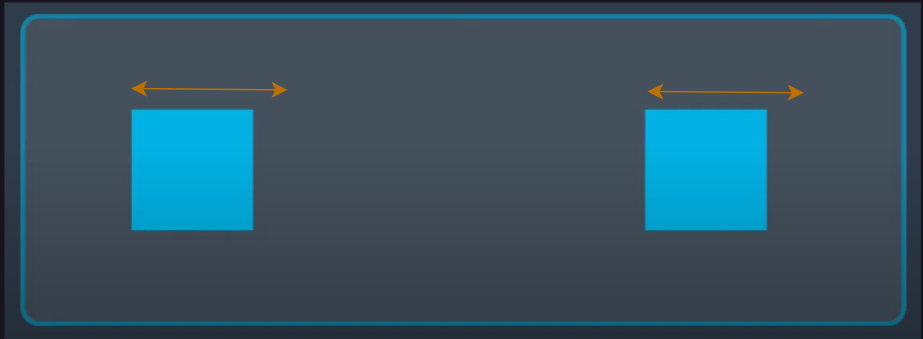
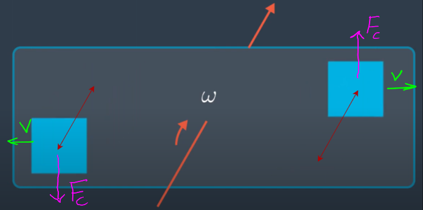

Gyros work by having two tiny masses, called Proof Masses, vibrate in opposite directions. When there is no rotation, these masses just move along a horizontal line i.e. they will have some horizontal velocity.

If the rotation of the sensor is paused for an instant and its state captured, the rotation vector and the horizontal velocity vectors being orthogonal to each other leads to Coriolis Force vectors (that are orthogonal to the other 2 vectors):